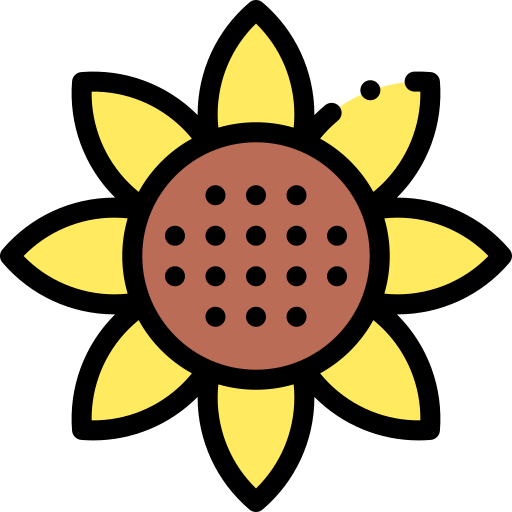

|  | 惹，花來認識 |
|
惹，花是在1996年創立於日本東京的一間花卉外銷公司。
我們致力於全球的花卉生態的進出口以及花卉保育。
目的是為了讓後代也能觀賞到現有花卉，也同時為聯合國的保育花卉機構
目前保有72種來自全世界的保育花卉品種。
且在亞洲各國（台灣、南韓、中國）都擁有超過5,000公頃的大型生態保育花園。
近年來也積極拓展至歐洲各地，目前於烏克蘭有一間上市分公司，預計2025年將在加拿大建立一座全球第一個花卉主題樂園。
我們不僅在保育、進出口上有成績。近年來也和許多產業進行合作，像是台灣最大的綠建築公司（綠綠公司）、以及
以及六福村、台北花卉博覽會等等都有我們的足跡。
惹，花 is a flower export company founded in Tokyo, Japan in 1996.
We are committed to the global import and export of flower ecology and flower conservation.
The purpose is to allow future generations to enjoy the existing flowers, and at the same time for the United Nations' flower conservation agency
There are currently 72 conservation flower varieties from all over the world.
And in Asian countries (Taiwan, South Korea, China) have more than 5,000 hectares of large ecological conservation gardens.
In recent years, it has also actively expanded to all parts of Europe. Currently, it has a listed branch in Ukraine. It is expected to build the world's first flower theme park in Canada in 2025.
We are not only successful in conservation, import and export. In recent years, it has also cooperated with many industries, such as Taiwan's largest green building company (Green Green Company), and
And Leofoo Village, Taipei Flower Expo, etc. have our footprints.
| CompanyAddress | No. 69, Fuhua 1st Street, Tainan City |
| Contact number | 02-22147744 ext 203, 205 |
| Principal | Minister Zhang of the Export Department |
我們在尋找對花卉有興趣且有熱忱的外語人才、國貿人才、或是你本身為農業相關科系、保育科系出身的學生！
無相關科系以及無經驗也可！只要您寓意學且對我們公司理念贊同。我們將送您至日本訓練分公司做實習
有支薪！費用由我們負擔！
We are looking for foreign language talents, international trade talents who are interested in flowers and passionate about flowers, or students from agriculture-related majors or conservation majors!
No relevant department and no experience are also allowed! As long as you are moral and agree with our company philosophy. We will send you to Japan Training Branch for internship
There is a salary! The cost is borne by us!